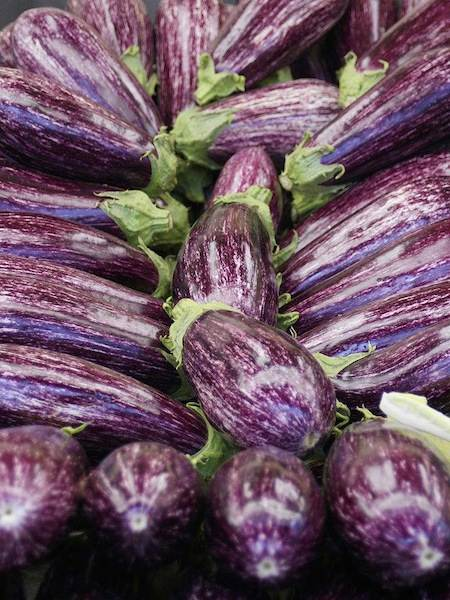

Plants as well as animals react to their surroundings: they are sensitive to light, water and the force of gravity.
Plant shoots grow towards light, and upwards away from gravity. Roots grow away from light and towards water and the pull of gravity.
Plant hormones (plant growth substances) coordinate the plant’s response to stimuli. Unequal distribution of these hormones causes unequal growth rates in cells.
Phototropism
Phototropism is the way plants grow in response to light. Shoots grow in the direction of light (positive phototropism) because they need light for photosynthesis.
The tip of a shoot produces hormones called auxins. Auxins move to the side of the shoot away from the light. They make the cells on that side grow longer than the cells on the shaded side. This causes the shoot to bend in the direction of the light source.
Positive phototropism
Gravitropism
Gravitropism (or geotropism) is the way plants grow in response to the force of gravity. Roots grow downwards (positive gravitropism), but shoots grow upwards.
Roots also produce auxins, but they have a different effect than in shoots. Gravity makes them collect on the lower side of the root, but here they stop the cells from getting longer. So the root bends downwards.
In shoots that are growing horizontally, gravity makes auxins collect on the lower side. But in the shoot this makes cells elongate, so the shoot bends and grows upwards.
Gravitropism: auxins have different effects on shoots and roots
Uses of plant hormones
Farmers and gardeners can use artificial plant hormones as selective weedkillers. Large doses make plants grow out of control and die. Most weeds have broad leaves which absorb a lot of the hormone, while crop plants with narrow leaves, such as wheat or grass, absorb less and are not affected.
Synthetic plant growth hormones are also used as rooting powders. Shoots are cut from plants and dipped in the powder before planting in a growing medium. This encourages roots to develop more quickly on the cuttings.
Hormones and fruit growing (Edexcel)
Fruits normally develop to protect seeds after pollination, but fruits with no seeds are often preferred for eating or processing. Growers can produce seedless fruit – for example tomatoes or aubergines – by spraying the flowers with plant hormones. The fruits develop even though no seeds are produced.

Aubergines can be produced seedless by spraying their flowers with plant hormone
Seedless grapes are naturally seedless, but growers spray them with artificial plant hormones to make the fruit grow bigger.
The ripening of fruit is also controlled by plant hormones. Fruit can be picked before it is ripe, so it is less likely to be damaged. Spraying with hormones during transportation means that the fruit ripens and arrives at the supermarket in perfect condition.